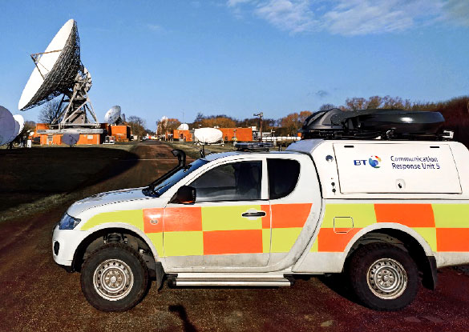

Some representative placeholder content for the first slide.
Second slide label
Some representative placeholder content for the second slide.
Reimagine Coverage
Parallel Wireless OpenRAN supports indoor or outdoor deployment scenarios at the lowest TCO and can be deployed on an accelerated timeline to help mobile operators deliver coverage everywhere from rural to suburban to most dense urban.
Easy to install, low-cost and high-performing cloud-native Parallel Wireless Open RAN supports macro, Massive MIMO or small cell deployments for densification and delivers superior end user QoS for consumers and industries in urban scenarios.
Parallel Wireless cloud-native ORAN approach enables any 5G migration option and is software upgradable to any future 3GPP releases delivering the most cost-effective, easy to deploy, and advanced 5G capabilities for all 5G use cases.
View our global openings and apply today to join the team.
Reimagine Your Network
TParallel Wireless created the world’s only ALL G (5G/4G/3G/2G) software-enabled OpenRAN architecture to make delivery of wireless coverage or capacity use cases, especially capital intensive 5G, affordable as it enables mobile operators and industries to unleash the full value of connectivity. With unified across 5G/4G/3G/2G and Wi-Fi cloud-native architecture that is open and standardized across five key domains – RAN, Edge, Core, Orchestration and Analytics – we are committed to the 5G vision of bringing Internet to every person and organization for a truly connected world at much lower cost to deploy and maintain.
Through open collaboration with OpenRAN ecosystem, we’ve created the world’s first and largest fully compliant OpenRAN portfolio that delivers the next generation of wireless infrastructure at a much lower cost, ensuring more equal access to 5G globally. Our software-defined and interoperable OpenRAN architecture was designed from the ground up to reduce complexity and drive out cost from every aspect from the RAN to the Core. We pride ourselves on offering a fully automated outdoor or indoor coverage and capacity solutions that are easy and cost-effective to deploy and maintain and are software upgradable to 5G.
TParallel Wireless created the world’s only ALL G (5G/4G/3G/2G) software-enabled OpenRAN architecture to make delivery of wireless coverage or capacity use cases, especially capital intensive 5G, affordable as it enables mobile operators and industries to unleash the full value of connectivity. With unified across 5G/4G/3G/2G and Wi-Fi cloud-native architecture that is open and standardized across five key domains – RAN, Edge, Core, Orchestration and Analytics – we are committed to the 5G vision of bringing Internet to every person and organization for a truly connected world at much lower cost to deploy and maintain.
The company’s end-to-end ALL G cloud-native OpenRAN portfolio is designed to help our customers modernize their networks, reduce deployment cost and complexity, increase operational efficiency, find new revenue streams and start deploying multi-vendor 5G networks today. Software innovation and openness across 5G/4G/3G /2G and Wi-Fi coupled with network automation drives TCO reduction for low-density or high density use cases of up to 60% for CAPEX and 65% for OPEX..
Visit with us at upcoming tradeshows, conferences or attend our webinars to learn how we can help you reimagine your networks.
Connect with us at events
Awards
We are honored and humbled to be recognized by the industry with awards for our innovation, technology vision and deployments.
Learn More
Our Products
Access: OpenRAN
Our OpenRAN hardware ecosystem consists of macros, outdoor and indoor small cells, and Massive MIMOs that are all Software Defined Radios (SDRs) and can be software upgraded to 5G for ease of deployment and much lower cost.
Network Software
Our software platforms provide RAN and core services, orchestration, programmability, and service assurance including analytics and monitoring to deliver business agility, TCO reduction and to enable new revenue opportunities.
Intelligence
and Automation
Network automation and intelligence software across ALL Gs for outdoor and indoor delivers TCO savings with self-configuration and self-optimization to enable optimal subscriber experience..
Solution
Reimagine Your Network. Reimagine Your Economics
Parallel Wireless created world’s only 5G 4G 3G 2G OpenRAN architecture to make delivery of wireless coverage or capacity use cases, especially capital intensive 5G, affordable as it enables mobile operators and industries to unleash the full value of connectivity. With unified across 5G 4G 3G 2G cloud-native architecture that is open and standardized across five key domains – RAN, Edge, Core, Orchestration and Analytics – we are committed to 5G vision of bringing Internet to every person and organization for a truly connected world. The company’s end-to-end ALL G cloud-native OpenRAN portfolio is designed to help our customers modernize their networks, reduce deployment cost and complexity, increase operational efficiency, find new revenue streams and start deploying multi-vendor 5G networks today.
Rural
Support urban or rural coverage deployments with Parallel Wireless easy to deploy and easy to maintain OpenRAN to deliver optimal subscriber experience at much lower TCO.
Learn More
br
Urban
Deliver high throughput, low latency and consistent experience with Parallel Wireless easy to install and maintain, low-cost and high-performing cloud-native 5G 4G 3G 2G architecture for macro or small cell deployments.
Learn More
Private LTE
Provide dedicated, fixed-cost LTE networks for businesses and IoT devices using Parallel Wireless OpenRAN on licensed, shared, or unlicensed spectrum to deliver secure, managed information flow for enterprises of any size.
Learn More
In-Building
Deploy reliable indoor coverage solutions at pennies per square foot while reducing the complexity of deployment and maintenance and delivering quality voice and data services to the end user.
Learn More
Public Safety LTE
Provide Public Safety LTE with our solution to deliver reliable and secure coverage, local organizational control, and resilience to first responders, police and defense organizations in daily and tactical operations.
Learn More
Find out how we help our customers roll out services faster and reduce OPEX by visiting our resources page to download data sheets and solution overviews or watch customer videos or webinar recordings.
Urban Solution
Global Mobile Network Operators (MNOs) are upgrading their networks in urban and dense urban environments to enable faster service and meet the growing digital demands of the future. To do so, they must ensure high quality of service (QoS) and a consistent end-user experience everywhere and at any time, especially during peak usage hours.
Expand and Modernize Your Networks
Our Urban Solution allows MNOs to expand and modernize their networks with an urban-ready, ALL G, Open RAN solution which is O-RAN Alliance compliant running on 7.2 radios. Our solution is easy to install, high-performing and reduces Total Cost of Ownership (TCO) while simplifying maintenance and enabling a broad ecosystem of partners.
With commercial-off-the-shelf (COTS) vBBU hardware our Urban Solution enables Open RAN radios, resource orchestration, network slicing and subscriber management across All Gs – 2G, 3G, 4G, 5G and beyond. Our solution has advanced through the 3GPP and O-RAN Alliance release roadmap and is supporting the foundational features and capabilities for strong network performance in high-capacity urban environments.
Features and Capabilities
Our Urban Solution is an agile, software-based approach to RAN infrastructure, which is designed to allow MNOs to quickly deploy network upgrades at a lower TCO. The following describes the features and benefits of our state-of-the-art Urban Solution:
Inovate- Proprietary interfaces and limited flexibility with legacy suppliers make it challenging for MNOs to maintain, expand, and upgrade their networks to meet future demands. With our Parallel Wireless Urban solution, MNOs can avoid vendor lock-in, scale and enable new innovative services seamlessly with cloud-native centralized tools such as Continuous Integration/Continuous Delivery (CI/CD), DevOps, Artificial Intelligence (AI) and Machine Learning (ML).
Futureproof for 5G – MNOs need to upgrade their networks to prepare for the explosive data demands such as Internet of Things (IoT), Industry 4.0, autonomous driving, and digital health. With our Urban solution MNOs can upgrade their networks to any G with a commercial-off-the-shelf (COTS) vBBU which is easy to install, has open interfaces and supports a broad ecosystem of vendors across 2G, 3G, 4G and 5G, preparing networks for the future.
Easy to install, modernize and expand networks – The costs to deploy and maintain networks and the lack of interoperability can be daunting as many operators are supporting 2G voice while migrating to 4G data and preparing for the greater bandwidth possibilities of 5G. Easily change and upgrade technologies to support emerging needs with our cloud-native software-based solution.
Reduce Total Cost of Ownership (TCO) – Network Operations Center (NOC), zoning and permits, management services, power and backhaul, are a few of the many expenses required to maintain and upgrade networks. A cloud-native, software-defined architecture with state-of-the art features such as RAN automation, self-configuration, hands free software testing, integration and delivery drives down costs and improves interoperability. A container based DU/CU implementation across ALL Gs, enables faster time-to-market for new services and features enabling OPEX and CAPEX savings.
Enhance end user experience – MNOs need to deliver a high quality and consistent experience everywhere, and all times, including during peak usage hours in high-capacity urban environments. Artificial Intelligence (AI) and Machine Learning (ML) enable seamless software upgrades utilizing data to optimize network performance in urban environments, delivering optimal subscriber throughput and quality of service. With open non-proprietary interfaces, the Parallel Wireless Urban Solution addresses network overloads during high peak hours, ensuring ubiquitous coverage, enabling state-of-the-art applications such as IoT, and exceeding customer expectations.
Deployment Scenarios
Mobile Network Operators must have flexibility with network deployments while simultaneously keeping Capital Expenses (CAPEX) and Operating Expenses (OPEX) down, which is extremely important in high-capacity, dense urban environments. Our Urban Solution is ALL G, O-RAN compliant and enables cost conscious mobile operators to overcome deployment barriers while meeting necessary targets of generating new revenue, improving end user experience, reducing TCO and making their networks future-proof.
With our lean Open RAN cloud-native software solution on a modest server and Open RAN automation with DevOps and CI/CD, network upgrades and software updates are easier and faster to roll out, thus improving TCO. Multi-vendor and multi-operator support allows flexible deployments even in the most difficult urban locations.
Deployment Options Include:
Integrated – Enables 2G, 3G, 4G from the same base station with upgrades to 5G. This deployment option provides the lowest power consumption for multi-mode operation. Parallel Wireless has had successfully integrated deployments with customers, MTN, Optus and Vodafone Turkey.
Urban, Suburban and Rural (split 7, 8) – This deployment option supports three environments, Urban, Suburban and Rural, and enables ALL Gs from the same base station and is software upgradeable to 5G. This option includes pooled server capacity with a COTS vBBU and is upgradeable to accommodate other splits. Parallel Wireless has successfully worked with Inland Cellular, and Vodafone Turkey and Ireland implementing Urban, Suburban and Rural deployments.
Our Urban Solution is the first O-RAN Alliance compliant Open RAN solution supporting all generations of networks, from 2G, 3G, 4G and 5G on 7.2 radios. With open, non-proprietary interfaces that address network overloads during high peak hours, ensuring ubiquitous coverage, faster speeds, and lower latency, the Urban Solution enables digital transformations preparing networks for the future.
Download our Urban Solution Overview to learn more
Reimagine Coverage
Parallel Wireless OpenRAN supports indoor or outdoor deployment scenarios at the lowest TCO and can be deployed on an accelerated timeline to help mobile operators deliver coverage everywhere from rural to suburban to most dense urban.
Reimagine Capacity
Easy to install, low-cost and high-performing cloud-native Parallel Wireless Open RAN supports macro, Massive MIMO or small cell deployments for densification and delivers superior end user QoS for consumers and industries in urban scenarios.
Reimagine 5G and Beyond
Parallel Wireless cloud-native ORAN approach enables any 5G migration option and is software upgradable to any future 3GPP releases delivering the most cost-effective, easy to deploy, and advanced 5G capabilities for all 5G use cases.
Rural Solution
Enhanced mobile broadband will be the first commercial application of 5G and can help operators deliver coverage everywhere from rural to suburban to most dense urban locations. Parallel Wireless OpenRAN can support all those deployment scenarios at the lowest TCO and can be deployed on accelerated timeline.
Features and Capabilities
Parallel Wireless’s innovative cloud-native OpenRAN coverage solution enables coverage by lowering cost, simplifying installation, and increasing flexibility through disaggregation of hardware and software. The flexibility of our software platform enables deployment in urban or rural environments. To meet a variety of deployment scenarios, we have a large portfolio of OpenRAN hardware available from macrocells, to small cells, to Massive MIMOs, all orchestrated and managed by our OpenRAN and network software suite:
Offering ALL Gs in RRHs, all software upgradable to any G, and enabling access flexibility; shared capacity on COTS-based vBBU to provide voice and data on the same equipment.
Providing an overall low-cost solution with a cost structure that serves low density through deployment flexibility (can deploy 1 sector per site, or tri-sector where needed with the same hardware and all optimizations and handovers done by OpenRAN software) or high density through selection of OpenRAN hardware (macros, small cells or Massive MIMOs) that fit the deployment need.
Enabling the new telco value chain in coverage through flexibility in operation – with the Parallel Wireless OpenRAN controller enabling new business models, new revenue generation and network sharing – coverage network slice can be managed by a third party without affecting any other regional or urban slices.
Deployment Options
Uncertainty in the coverage business case (from the demand side) in low-density areas, operational complexity (from the cost side) and competitive pressure in urban/high density markets results in MNOs struggling to find a coverage solution that can address both scenarios:
Low density areas: Parallel Wireless’s unique low cost, low footprint and cloud-native multi-technology solution helps to deliver coverage to low density areas by making deployments easy and affordable to install, maintain and to upgrade to any future technology (including 5G) on the same hardware without installing any additional hardware or performing sites visits. It minimizes the CAPEX/OPEX in these low-density areas where there is high uncertainty on return of the investment for MNOs. It also delivers superior sustainability.
High density areas: As MNOs deploy urban networks easy to install, low-cost and high-performing cloud-native Parallel Wireless OpenRAN supports macro or small cell deployments for densification and delivers superior end user QoS for consumers and industries with our OpenRAN software suite making high density networks easy to deploy and maintain by self-configuring and self-optimizing them real-time.
Learn More about Coverage Deployment Strategies in Our Urban Densification PowerPoint Overview
Related Products & Technologies
Outdoor OpenRAN
Our fully orchestrated OpenRAN hardware consists of macros, outdoor and indoor small cells, and Massive MIMOs that are all Software Defined Radios (SDRs) and can be software upgraded to 5G for ease of deployment and much lower
5G
OpenRAN/h5>
Our cloud-native OpenRAN approach enables any 5G migration option and is software upgradable to any future 3GPP releases delivering most cost-effective and advanced 5G capabilities to mobile operators and industries.
ALL G Real-time SON
Parallel Wireless 5G 4G 3G 2G and Wi-Fi SON software module makes networks automated with self-configuration and self-optimization to deliver plug-n-play deployments and hands-free maintenance for much lower overall TCO.
Private LTE
Parallel Wireless Private LTE solution provides global mobile operators with a new revenue generating opportunity for private and public enterprises in search to replace their legacy, hardware-centric networks with cloud-native, easy to deploy and maintain 4G/LTE solution. Parallel Wireless Private LTE network solution provides secure and reliable connectivity that covers every inch of operations, for humans and machines (IoT) and software-upgradable to 5G. Applicable for all industries, it provides the secure, reliable, flexible and cost-effective wireless connectivity that business- and mission-critical applications demand.
Features and Capabilities
Parallel Wireless Private LTE is a converged, service-aware, mission-critical end-to-end architecture to deliver autonomy, efficiency and staff safety. Components include:
A complete end-to-end LTE wireless broadband network — radio access (i.e. vessel, rig, platform, indoor, M2M),
Backhaul for transport, core, devices and management
The components leverage the most advanced radio access technologies, including small cells and macro cells for maximum coverage and capacity to reach remote systems, vessels and enable safety for personnel.
A common communications management system for the radio access network, backhaul and core along with lifecycle device management simplifies and reduces operating expenses while being interoperable with existing infrastructure.
The same solution can be deployed in both outdoor (fixed and in-vehicle) and indoor scenarios for specialized enterprise use cases:
Manufacturing and warehouses: Private LTE puts a manufacturing site’s network on a different frequency so robotic and IoT devices don’t have to compete for coverage. With priority and pre-emption, Parallel Wireless solution also can provide a higher quality of service for particular devices or voice traffic.
Mining
Oil and Gas: Wi-Fi isn’t a robust or secure option to meet network needs, yet provisioning wires in remote locations or moving boats and motherships is challenging. With Parallel Wireless Private LTE as the primary WAN and satellite as the backhaul, the oil and gas industries have a secure LTE network that can keep everything and everyone connected, regardless of location. SON will assist with plug-n-play configuration and on-going hands free optimization while providing seamless mobility between boats and other moving vehicles.
Campuses: Colleges, financial institutes and hospitals.
The deployments are flexible: the system can be deployed locally or in the cloud.
The following services/features are provided by this solution:
Enables a variety of voice options (VoLTE, VoWiFi)
Interops with existing LMR/PMR or Wi-Fi networks
PTT (Push To Talk) that can integrate with DMR voice channels
Staff can now carry an LTE handset rather than a legacy DMR handset
M2M for pump, vessel health monitoring, easy vessel management, team tracking, etc.
Web browsing
Localization of 4G calls
Location based services
LMR/PMR and LTE interoperability
Dispatching
Multimedia streaming and sharing (video, picture, text)
Dual-band handsets could allow roaming onto consumer LTE networks
The solution will provide flexibility and elastic network:
In case of link failure to the cellular operator, the LTE circle will remain and provides all the above services locally
In case of emergency (such as backhaul loss, team trapped, etc.) PTT is available
Easily movable/portable above ground towers when blasting; easy to re-deploy
Learn More about Coverage Deployment Strategies in Our Urban Densification PowerPoint Overview
Related Products & Technologies
5G
OpenRAN
Our fully orchestrated OpenRAN hardware consists of macros, outdoor and indoor small cells, and Massive MIMOs that are all Software Defined Radios (SDRs) and can be software upgraded to 5G for ease of deployment and much lower
5G
Outdoor
OpenRAN
Our cloud-native OpenRAN approach enables any 5G migration option and is software upgradable to any future 3GPP releases delivering most cost-effective and advanced 5G capabilities to mobile operators and industries.
Real-time
ALL G SON
Parallel Wireless 5G 4G 3G 2G and Wi-Fi SON software module makes networks automated with self-configuration and self-optimization to deliver plug-n-play deployments and hands-free maintenance for much lower overall TCO.
Private LTE
5G networks will have to support several services, many of them with different and almost orthogonal performance requirements.
Three major service categories defined for 5G are:
Enhanced Mobile Broadband (eMBB): This has been billed as the main driver for initial 5G rollouts. Not only are end users expecting to receive faster speeds, they expect more data allowances for a lower price. 5G meets end-user expectations while delivering spectral efficiency for the operator. The Parallel Wireless OpenRAN and network software suite plays an important role here by abstracting core functionality and catering for different deployment options, based on the mobile operator requirement. Massive Machine Type Communications (mMTC): LTE-M and NB-IoT, standardized as part of 3GPP Release-13 version of LTE, are being enhanced to work with 5G. There is no special focus for mMTC in 5G currently, but this will play an important role in the 3GPP Release-16 version of 5G. The Parallel Wireless software suite will help to manage the myriad of IoT devices and mitigate interference and reduce signaling strain on the core. Ultra-Reliable and Low-Latency Communications (URLLC): This feature promises to make 5G appealing to many new verticals, thereby providing mobile operators with new sources of revenue. There is no focus for URLLC in 5G currently but it will play an important role in 3GPP Release-16 version of 5G. This feature also requires 5GC, as new slices would need to be created for different verticals to meet their requirements. In addition to the above use cases, fixed wireless access (FWA) has also emerged as an important use case for quite a few operators. While there are no special features that have been added specifically for FWA, features such as 3D beamforming and wider bandwidths make 5G an attractive option for FWA. Parallel Wireless OpenRAN is increasingly being deployed not only to provide mobile broadband services but also for fixed wireless deployments using 4G LTE. It is foreseen that this trend will continue with 5G.
Features and Capabilities
In order to expedite network availability, phase 1 of 5G Deployments enables mobile operators to launch services with new 5G radios (aka NR), with the ability to use either an existing 4G core (NSA), or a newly deployed 5G Core (SA). In addition to the core network, RAN is undergoing major transformation too. By distributing protocol stacks between different components (different splits), solution providers focus on addressing the tight requirements for a near perfect fronthaul between RRHs and BBUs. Parallel Wireless is committed to a cloud-centric approach across its end-to-end 5G 4G 3G and 2G portfolio to include OpenRAN, and orchestration solutions, using open development and automation to deliver cost-effective networks that meet subscriber demands today and tomorrow. Cloud-native, fully virtualized architecture with a flexible end-to-end orchestration framework includes:
Globally deployed OpenRAN solution supporting multiple 3GPP compliant RAN splits, easy to deploy and maintain with Parallel Wireless SON module. The OpenRAN architecture enables the Remote Radio Units (RRUs) to interwork with the virtualized COTS-based Base Band Unit (vBBU) over Ethernet Fronthaul (FH), overcoming the traditional constraints of Common Public Radio Interface (CPRI™) over fiber. The OpenRAN hardware is remote-upgradable Software Defined Radio (SDR) capabilities from any G to 5G.
Network software to support easy install, hands-free maintenance, end-to-end network slicing, vCU functionality meeting user expectations while delivering lowest deployment cost.
Both access and core offerings are enabled by its network functions virtualization (NFV) and container management and orchestration software platform. With numerous successful 5G demonstrations and trials in progress globally, Parallel Wireless cloud-native infrastructure and OpenRAN approach is helping operators reimagine the mobile network economics.
DEPLOYMENT BENEFITS
With Parallel Wireless OpenRAN architecture, MNOs can:
Deploy 5G networks with 5G-native architecture The Parallel Wireless architecture is software-based, so it is inherently 5G-native, and a network could be switched to 5G when standards are finalized with a simple software upgrade, maximizing the original 4G investment on the RAN or core. Parallel Wireless architecture supports any migration option.
Simplify 5G and reduce deployment cost through 5G Open RAN The orchestration and real-time SON capabilities provide real-time optimization and network automation reducing the maintenance cost and enabling new business cases for 5G. In addition, spectrum sharing and network sharing can be enabled through MORAN and MOCN functionality to maximize spectrum and reduce 5G deployment cost.
Deliver 5G experiences for consumers and industries With the features of Parallel Wireless’s OpenRAN architecture, the introduction of network slicing and control and user plane separation (CUPS) on any 5G NSA core supports 5G design architectures.
The OpenRAN software suite manages each slice, delivering the required QoS, security, latency characteristics.
In addition, it will deliver dynamic capacity and throughput for optimal performance for 5G data intensive applications through scalable software-based architecture.
Learn More in Our 5G Webinar Recording
Related Products & Technologies
5G
OpenRAN
Our fully orchestrated OpenRAN hardware consists of macros, outdoor and indoor small cells, and Massive MIMOs that are all Software Defined Radios (SDRs) and can be software upgraded to 5G for ease of deployment and much lower
5G
Outdoor
OpenRAN
Our cloud-native OpenRAN approach enables any 5G migration option and is software upgradable to any future 3GPP releases delivering most cost-effective and advanced 5G capabilities to mobile operators and industries.
Real-time
ALL G SON
Parallel Wireless 5G 4G 3G 2G and Wi-Fi SON software module makes networks automated with self-configuration and self-optimization to deliver plug-n-play deployments and hands-free maintenance for much lower overall TCO.
4G LTE
Parallel Wireless’s fully virtualized, software-based unified 2G/3G/4G/ 5G architecture allows operators to easily deploy, manage, scale, and future-proof their 4G/LTE networks or cost-effectively migrate their existing networks from 2G/3G to 4G while providing the lowest TCO by making the networks self- configuring, self-optimizing, and 5G-ready.
Features and Capabilities
Parallel Wireless’s solution is comprised of two main components to provide LTE based functionality. The OpenRAN RRH hardware from a variety of ecosystem partners. A COTS vBBU can provide shared capacity or enable Carrier Aggregation (CA) at a much lower cost. OpenRAN Controller software suite consolidates all necessary functionalities to build, expand or densify the 4G RAN (i.e. X2-gateway, small cell gateway, and security gateway) to build new or expand/ densify current 4G networks. Parallel Wireless’s Automation and Orchestration software module provides SON functionality to enable self-configuration and self-optimization during deployments, resulting in quick and easy rollouts. Interference mitigation by OpenRAN Software simplifies network expansions to make them easy to scale. OpenRAN and network is software-upgradable, removing the cost and complexity of transitioning the networks to 5G.
DEPLOYMENT OPTION
Parallel Wireless’s solution is ideally suited for:
Greenfield 4G Deployment: SPs looking to provide new 4G service in rural or urban areas.
Densification: SPs looking to densify their 4G networks to support increasing user count.
Indoor 4G coverage based on CAP and OpenRAN controller with local or distributed EPC.
As it delivers the following benefits:
Cloud-native architecture across all components:
- OpenRAN software abstracts Core and RAN and brings 5G-like benefits to 4G (with low latency and network slicing).
- Data traffic local breakout through utilization of CUPS can deliver low latency into 4G networks today.
Easy to deploy, manage, and scale:
- The software platform automates network optimization to reduce deployment cost.
- Self-configuration makes radios plug-and-play.
- Self-optimization reduces the need for drive testing and results in cost reduction.
- Radio is software-defined to upgrade user count and technologies, so sites can be software upgradable to higher capacity with COTS BBU or 5G when needed.
- Orchestration enables optimal network performance, which results in superior end-user QoE with seamless mobility, preventing subscriber churn.
Lowest TCO:
- Automation reduces the need to travel on-site or use professional services.
- Hands-free optimization of PW SON saves on on-going maintenance.
Future-proof and easy migration to 5G:
- Software platform enables 5G-native architecture which is upgradable to any 3GPP release in the future and can enable any 5G migration option.
- Virtualization of gateways (like Security gateway, Small Cells gateway, Wi-Fi gateways, etc.) as VNFs allows flexibility to introduce new components and services within the network.
Learn More how Parallel Wireless OpenRAN Solution Can Help You Densify Your Networks Cost-effectively
Learn More how Parallel Wireless OpenRAN Solution Can Help You Densify Your Networks Cost-effectively
Our fully orchestrated OpenRAN hardware consists of macros, outdoor and indoor small cells, and Massive MIMOs that are all Software Defined Radios (SDRs) and can be software upgraded to 5G for ease of deployment and much lower
5G
Outdoor
OpenRAN
Our cloud-native OpenRAN approach enables any 5G migration option and is software upgradable to any future 3GPP releases delivering most cost-effective and advanced 5G capabilities to mobile operators and industries.
Real-time
ALL G SON
Parallel Wireless 5G 4G 3G 2G and Wi-Fi SON software module makes networks automated with self-configuration and self-optimization to deliver plug-n-play deployments and hands-free maintenance for much lower overall TCO.
Outdoor 3G Wireless Solution
Parallel Wireless’s innovative virtualized multi-technology OpenRAN solution supports 3G for outdoor deployments. It disaggregates hardware and software to make deployments easy and affordable to install, maintain and upgrade to any future technology. It automates radio and network optimization, provides QoS for voice and data while reducing deployment and maintenance TCO.
Features and Capabilities
Key product components of our outdoor OpenRAN include:
DEPLOYMENT OPTION
Parallel Wireless’s solution is ideally suited for:
Outdoor OpenRAN hardware:
- Parallel Wireless OpenRAN outdoor base stations are built using low-cost GPP-based components, and are easy to install, which helps drive down CAPEX. Hands-free maintenance is enabled by self-optimization and self-healing capabilities of Parallel Wireless OpenRAN controller, thus reducing OPEX. Being able to deploy outdoor 3G over any type of backhaul including satellite and provide voice/data service is critical to ensure quality customer experience for the end users.
OpenRAN controller for outdoor deployments:
- The outdoor Open RAN solution uses Parallel Wireless’s OpenRAN controller which provides for enterprise gateway functionalities with many 3G/4G functions virtualized, including Small Cell gateway and other functionalities. Normally the cost of these functionalities would be a significant extra. The controller software itself reduces the CAPEX up to 90%, as it includes many gateway functionalities needed for enterprise solutions to manage licensed and unlicensed spectrum.
- The controller runs on any x86 server, with a well-understood CAPEX of a few thousands of dollars with plenty of capacity.
Deployment Scenarios
Our fully virtualized 3G solution is ideal for 3G outdoor deployments to provide cost-effective coverage. 3G OpenRAN and SON software can be deployed locally or in the cloud to enable deployment flexibility, low latency and resilience.
RELEVENT PRODUCT
Outdoor OpenRAN
Our fully orchestrated OpenRAN hardware consists of macros, outdoor and indoor small cells, and Massive MIMOs that are all Software Defined Radios (SDRs) and can be software upgraded to 5G for ease of deployment and much lower cost.
5G 4G 3G 2G Technologies
By supporting ALL G, we deliver superior subscriber experience at substantial cost savings to mobile operators when building or maintaining both today’s 4G/3G/2G networks and tomorrow’s multi-vendor 5G networks.
OpenRAN Controller
E2 interface-based, OpenRAN controller orchestrates multi-vendor outdoor and indoor 5G 4G 3G 2G RAN, automates networks, provides QoS for voice and data while reducing deployment and maintenance TCO.
Cloud-native 2G
The Parallel Wireless 2G solution is a complete GSM network, software-upgradeable to any G, designed specifically to connect the unconnected at much lower cost and on accelerated timeline. It consists of a complete, carrier-grade base station subsystem including Parallel Wireless OpenRAN outdoor hardware to provide any G access and connect to any available transport and OpenRAN software suite – a 2G/3G/4G + security gateway to configure, optimize network and provide security without any human intervention while delivering local breakout (to improve satellite bandwidth requirement) and seamless mobility between any G technologies.
Technical Features
The Parallel Wireless GSM Radio Access Network solution consists of a complete Base Station Subsystem, ready to be interfaced to MSC & SGSN of existing networks or any greenfield deployments. The additional technical features include:
DEPLOYMENT OPTION
Parallel Wireless’s solution is ideally suited for:
Fully virtualized 2G solution that not only virtualizes 2G including vBSC but simplifies legacy 2F architecture with improved performance on high latency backhaul links (i.e satellite) and improved voice quality with RTP localization feature (Lawful Intercept enabled).
2G solution that provides MUCH larger coverage area with much Higher RF output and is easy to deploy and maintain as it is fully automated though OpenRAN software SON module.
Easy and cost-effective upgradability to future Gs as it’s the only RAN solution with no forklift upgrade from 2G to 3G to 4G and 5G as the same baseband and radio can support 2G, 3G, 4G, & 5G at the same time, no need to buy additional equipment once ready to provide 3G, 4G, or 5G services.
Flexible backhaul options, including low-cost wireless mesh, satellite, microwave
Scalable with tens of thousands of sites supported.
True RAN Sharing enabled using PW Baseband (vBBU) and Aggregator software.
It also supports active-active model towards MSC and SGSN to provide additional resiliency in case of network outages or failures.
Dynamic power sharing between technologies over the same radio
Easily deployed in heavy interference and limited spectrum environments with advanced Uplink receivers and Synthesized Frequency Hopping
Bringing the power of 4G SON to your 2G network with Automatic Neighbor Management
Deployment Scenarios
Our fully virtualized 3G solution is ideal for 3G outdoor deployments to provide cost-effective coverage. 3G OpenRAN and SON software can be deployed locally or in the cloud to enable deployment flexibility, low latency and resilience.
RELEVENT PRODUCT
Outdoor OpenRAN
Our fully orchestrated OpenRAN hardware consists of macros, outdoor and indoor small cells, and Massive MIMOs that are all Software Defined Radios (SDRs) and can be software upgraded to 5G for ease of deployment and much lower cost.
5G 4G 3G 2G Technologies
By supporting ALL G, we deliver superior subscriber experience at substantial cost savings to mobile operators when building or maintaining both today’s 4G/3G/2G networks and tomorrow’s multi-vendor 5G networks.
OpenRAN Controller
E2 interface-based, OpenRAN controller orchestrates multi-vendor outdoor and indoor 5G 4G 3G 2G RAN, automates networks, provides QoS for voice and data while reducing deployment and maintenance TCO.
Software-Defined Virtualized RAN (vRAN)
Most of the CAPEX required to build a wireless network is related to the Radio Access Network (RAN) segment, reaching as high as 80% of the total network cost. Any reduction in the RAN equipment cost will significantly help the bottom line of wireless operators as they struggle to cope with the challenges of ever-increasing mobile traffic and flat revenues. Analysts projections of a 5G Macro-cell deployment cost show pricing falling by 50% until 2022 if it is built around an open architecture, whereas it will only fall by 30% if built in the traditional way. The 20% difference is hundreds of millions of dollars in the overall TCO, and will help mobile operators extend investments and become more profitable.
Ability to select any COTS BBU and pool them as necessary
A strategic software differentiation by enabling the Open RAN based Remote Radio Units (RRUs), provided by ecosystem partners, to interwork with the COTS-based Virtualized Baseband Unit (vBBU), preventing vendor lock-in
Ability to use non-ideal fronthaul (i.e. Ethernet), overcoming the traditional constraints of CPRI over fiber
Legacy RAN platforms have been based on proprietary hardware and rely on long and costly life-cycles in development, deployment, and operation. This created vendor lock-in and the inability to keep pace with technology and demographic changes. With each generation of radio interface change, these radios are typically replaced with newer versions at a significant investment and inconvenience to the mobile operators, perpetuating the vendor lock-in. Parallel Wireless innovative Open RAN solution is truly open, designed to address the requirements of 2G, 3G and 4G networks with design and programming capabilities that enable software upgrades to 5G – providing investment protection and deployment flexibility in comparison to the legacy traditional radio infrastructure expansion that requires costly physical replacement in evolution race to 5G.
Learn How Parallel Wireless OpenRAN is Changing the Mobile Networks Economics
Features and Capabilities
By disaggregating hardware and software, the Parallel Wireless software platform helps MNOs expand and modernize their legacy networks to support subscribers on ALL G technologies while being able to software upgrade them to 5G. Parallel Wireless industry-leading Open RAN solution consists of COTS vBBU, OpenRAN-based RRU, OpenRAN Controller and Network Software Suite:
OpenRAN Hardware — Software-defined GPP-based “white box” RRUs that allows MNOs to replace legacy 2G/3G/4G systems with fully virtualized OpenRAN technology. Multiple technologies can run simultaneously on the same site to provide superior data and voice services to the end users. Multi-technology RRHs are easy to deploy and maintain, and enable a clear technology evolution path from legacy technologies to 5G.
-Key features:
-Parallel Wireless supports a full range of RRU product portfolio from the ecosystem partners to support operators’ needs with different RF power ranges: 2T2R, 4T4R, 8T8R, massive MIMO
-The RRUs, provided by the ecosystem, support multiple carriers over multiple technologies: GSM, UMTS, LTE, 5G-NR
-The common vBBU software manages all types of RRUs from the partners
vBBUs – Running on COTS servers, Parallel Wireless vBBU brings the future-proof architecture of a Distributed Unit (DU) and a Central Unit (CU), deployed at the network’s edge. The vBBU resources can be shared among multiple RRUs on-site in a multi-carrier 1-sector, 3-sector or 6-sector configurations to achieve optimal resource pooling for TCO savings.
-Key features:
-GSM, UMTS, LTE, 5G-NR, carrier aggregation, 256QAM, support of 2×2, 4×4, Massive MIMOs and more Open RAN RRU hardware options
-Deployed on Commercially Off the Shelf (COTS) hardware with high-performance computing and storage, it delivers higher availability, reliability, and scalability
OpenRAN Aggregator:
-Gateway for all RAN interfaces towards the Core network. Has functions like vBSC, vRNC, vENB, HeNBGW & HNBGW. It also has Security capabilities like Security Gateway. Abstracts different types of RAN from Core network. Simplifies and Converges multi-RAT RAN network. Reduces signaling towards Core. Reduces complexity by abstracting different RANs. Aggregates interfaces towards Core network. Key Element of RAN Sharing.
Deployment Options
By supporting a variety of OpenRAN hardware to cater to different use cases for coverage and capacity, utilizing advanced receivers and beamforming, Parallel Wireless Open vRAN brings business agility with network elasticity, flexibility, and real-time RAN optimization. The edge-centric baseband processing delivers low latency, local breakout, seamless mobility with real-time interference management and optimal resource optimization. In addition, the vBBU is designed to support multiple 3GPP compliant traffic splits, making the Parallel Wireless O-RAN solution an ideal choice for a vendor-agnostic and future-proof strategy for a 5G evolution, helping to achieve substantial TCO savings with easy to deploy and easy to maintain fully virtualized OpenRAN.
-
Learn More in Our Recorded OpenRAN Webinar
RELEVENT PRODUCT
5G
Technology
Our cloud-native OpenRAN approach enables any 5G migration option and is software upgradable to any future 3GPP releases delivering most cost-effective and advanced 5G capabilities to mobile operators and industries.
ALL G Real-time SON
Parallel Wireless 5G 4G 3G 2G and Wi-Fi SON software module makes networks automated with self-configuration and self-optimization to deliver plug-n-play deployments and hands-free maintenance for much lower overall TCO.
OpenRAN Controller
E2 interface-based, OpenRAN controller orchestrates multi-vendor outdoor and indoor 5G 4G 3G 2G RAN, automates networks, provides QoS for voice and data while reducing deployment and maintenance TCO.
5G OpenRAN
5G radio, or NR (New Radio), improves spectral efficiency and delivers unprecedented network capacity. 5G New Radio technology is based on flexible OFDM waveforms and multiple access techniques, optimized for various 5G services, applications, and deployment use cases. 5G (NR) features are defined by various 3GPP standards, with first phase completion in Rel-15 and second phase in Rel-16. The Parallel Wireless OpenRAN software suite for 5G(NR) increases spectrum efficiency, traffic capacity, throughput, reliability, number of connected devices and reduces end-to-end latency. This technology enables MNOs to unlock and support diverse use cases such as Fixed Wireless Access (FWA), Enhanced Mobile broadband (eMBB), Massive Machine Type Communications (mMTC), and Ultra-Reliable Low Latency Communications (URLLC). Parallel Wireless OpenRAN outdoor hardware is software-upgradable to 5G, delivering these enhanced capabilities at much lower cost.
-
Learn more in our 5G NR Functional Splits white paper.
Related Products and Technologies
5G
5G-native
architecture
Parallel Wireless cloud-native OpenRAN approach enables any 5G migration option and is software upgradable to any future 3GPP releases delivering most cost-effective and advanced 5G capabilities.
OpenRAN Controller
Industry’s first OpenRAN controller that supports E2 interface and orchestrates multi-vendor outdoor and indoor 5G 4G 3G 2G RAN and automates radio and network optimization while reducing deployment and maintenance TCO.
Real-Time ALL G SON
Parallel Wireless SON software module makes networks automated with self-configuration and self-optimization to deliver plug-n-play coverage and capacity deployments and hands-free maintenance.
Reimagine the Economics of Multi-technology and Multi-vendor Networks
The concept of open goes beyond just standards interoperability. In theory, a RAN built by any of the legacy vendors is interoperable with any device, any core, any transmission network due to its conformance with 3GPP standards. But the software and interfaces remain either proprietary or optimized by the individual vendor and are often tied to the underlying hardware layer by the same vendor. The vision of the OpenRAN by Parallel Wireless is that it is open within the RAN, with the interfaces and operating software separating the RAN control plane from the user plane, building a modular base station software stack that operates on common-off-the-shelf (COTS) hardware, with open north- and south-bound interface. This software-enabled OpenRAN network architecture enables a “white box” RAN hardware meaning that baseband units, radio units and remote radio heads can be assembled from any vendor and managed by OpenRAN software to form a truly interoperable and open network.
Unifying ALL Gs and 5G Ready
5G radio, or NR (New Radio), improves spectral efficiency and delivers unprecedented network capacity. 5G New Radio technology is based on flexible OFDM waveforms and multiple access techniques, optimized for various 5G services, applications, and deployment use cases. 5G (NR) features are defined by various 3GPP standards, with first phase completion in Rel-15 and second phase in Rel-16. The Parallel Wireless OpenRAN software suite for 5G(NR) increases spectrum efficiency, traffic capacity, throughput, reliability, number of connected devices and reduces end-to-end latency. This technology enables MNOs to unlock and support diverse use cases such as Fixed Wireless Access (FWA), Enhanced Mobile broadband (eMBB), Massive Machine Type Communications (mMTC), and Ultra-Reliable Low Latency Communications (URLLC). Parallel Wireless OpenRAN outdoor hardware is software-upgradable to 5G, delivering these enhanced capabilities at much lower cost.
The resulting CAPEX cost benefits of selecting OpenRAN hardware are significant as it is reducing dedicated CAPEX hardware cost. Open source designs for the radio software minimizes costs even further. The cloud-native and software-based approach across ALL G significantly improves network economics by converging ‘ALL G’, including 2G, 3G, 4G, 5G, on to one unified software platform that is easy to manage. This eliminates the need for operators to maintain siloed legacy networks dedicated to just one G service resulting in up to 60% Opex cost reduction to maintain networks. This approach allows to modernize legacy networks for cost reduction and is essential to reduce the complexity and integration expense of rolling out multi-vendor 5G systems.
-
Learn How Inland Cellular cost-effectively enabled network expansion and interoperability with legacy equipment with Parallel Wireless cloud-native 4G architecture
Related Products and Technologies
5G 4G 3G 2G
Technologies
By supporting ALL G, we deliver substantial cost savings to mobile operators when building or maintaining both today’s 4G/3G/2G networks and tomorrow’s multi-vendor 5G networks.
Network Software
Our comprehensive software platform includes OpenRAN and network software suite to provide RAN and core services, orchestration and network programmability, network intelligence and service assurance including analytics, monitoring and orchestration.
Abstraction
Layer
OpenRAN Software Suite virtualizes the RAN interfaces to manage the 5G, 4G, 3G, 2G cells in real-time via multi-technology SON while abstracting RAN changes from the core network and the core network itself from the RAN..
Products & Technologies
Reimagine Your Network. Reimagine Your Economics
The RAN accounts for around 60% of CAPEX and 65% of OPEX in the cellular network TCO. Mobile operators need to maximize the value of their existing network assets before giving the green light to new investment. With its software-defined and cloud-native OpenRAN network architecture, and with the world’s largest OpenRAN ecosystem , Parallel Wireless is leading the Open movement by delivering substantial cost savings to mobile operators for building or maintaining both today’s 4G/3G/2G networks and tomorrow’s multi-vendor 5G networks. We strive to support our customers as they enable best-quality experiences to their end users and industries. industries.
Products
Our unified, cloud-native, software-defined product portfolio spans across RAN, transport, Core, and Analytics to help reduce the cost and deployment complexity of today’s and tomorrow’s networks for consumers and industries.
Learn More
br
Technologies
Parallel Wireless leads the innovation in wireless infrastructure, with software-defined unified cloud-native OpenRAN network solutions. We provide the world’s largest OpenRAN ecosystem, delivering substantial cost savings to mobile operators as they build or maintain today’s 4G/3G/2G and tomorrow’s multi-vendor 5G networks to enable quality experience to their end users.
Learn More
Visit our Resources page to download data sheets, solution overviews, watch webinar recordings and much more!
Customers
Helping Reimagine Global Cellular Networks
Bringing together unified network software and OpenRAN hardware, we are the only US provider capable of delivering true end-to-end innovative solutions for 5G, 4G, 3G and 2G deployments globally, including complex mixed technology and multi-vendor scenarios at much lower cost. Parallel Wireless enabled the world’s largest Open RAN ecosystem and has been recognized by Vodafone and Telefonica as a best performing vendor. Our customers include over 60 global mobile operators, as well as private and public industries and governments that use our software defined network portfolio to reimagine their networks. Our innovation has been recognized with 60+ Industry awards .
Learn how Parallel Wireless ALL G OpenRAN helped Vodafone modernize their network and reduce CAPEX and OPEX.
Download Case Study
Company
About Us
Parallel Wireless is leading the OpenRAN movement with the world’s first 5G/4G/3G/2G cloud-native OpenRAN architecture that is open, standardized, and interoperable across five key domains – RAN, Edge, Core, Orchestration and Analytics.
Through open collaboration with our OpenRAN ecosystem partners, we have created a world first and largest fully-compliant OpenRAN ecosystem that is capable of delivering the next generation of wireless infrastructure at dramatically lower cost, ensuring more equal access to 5G across the globe. Our OpenRAN portfolio is designed to help our customers modernize their networks, reduce deployment cost and complexity, increase operational efficiency, find new revenue streams, and start deploying multi-vendor 5G networks today. Our customers include over 60 global mobile operators, as well as private and public industries and governments that are all using our software-defined network portfolio to reimagine their networks and get ready for 5G./p>
Leadership
The Parallel Wireless team has experience building every component of the cellular network across 2G, 3G, 4G and 5G. We have built many companies from scratch into the leading industry players. For the past 7+ years, our amazing team has been reimagining the architecture of the cellular networks to make deploying and maintaining any G networks, including 5G, easy and cost-effective.
Learn More
br
Our Culture
We are a fast-moving technology company that is proud of what we do, ambitious about innovation and collaboration, and keenly focused on our customers’ success.
Join Our Global Team
Resources
Reimagine Your Network. Reimagine Your Economics
In this asset library you’ll find solutions brochures, data sheets, recorded webinars, and customer videos and case studies to learn more about Parallel Wireless world’s leading 5G 4G 3G 2G OpenRAN.
Solution Overviews
Learn more about Parallel Wireless 5G 4G 3G 2G coverage and capacity outdoor and indoor solutions by checking out our solution overview briefs and presentations.
Learn More
br
Case Studies
See how we’ve helped customers all over the globe modernize their networks and reduce costs with our outdoor and indoor OpenRAN.
Learn More
Customer Testimonial Videos
Hear it straight from our customers by watching our customer testimonial videos!
Watch More Here
White Papers
Take a deeper dive into our 5G 4G 3G 2G cloud-native solutions with our white papers.
Download Now
Webinars
Our webinar program is a great way to learn about everything-Parallel as well as latest industry trends.
Watch Now
Videos and Demos
Our videos and demos are a great way to learn about our products, solutions, and deployments – check them out to learn more..
Watch Now
Learn from our technical experts about how our OpenRAN solutions are improving networks around the world.
Careers at Parallel Wireless
We’re disrupting, challenging, and leading the future of telecommunications.
ThParallel Wireless is making a big difference for Mobile Network Operators (MNOs) across the globe as they move toward a secure, cloud-enabled, digital future built on Open RAN technology, and our teams from around the world are all in. There’s no better time to join Parallel Wireless to lead the disruption in wireless networks and propel your future.
Technology that delivers wireless connectivity, so all people can be connected whenever, wherever, and however they choose.
At Parallel Wireless, you’ll have a unique opportunity to reimagine the boundaries of what’s possible in telecommunications. As part of the Open RAN movement, you’ll help develop innovative products and solutions by leveraging open interfaces, thus enabling cost-effective, agile, and scalable mobile networks from 2G, 3G and 4G to 5G and beyond..
We Are #TeamParallelWireless
What do we value most? Our people, our technology, and reimagining the world – together. You’ll be part of a team, all driven to go beyond the status quo to reimagine what comes next. This is the #TeamParallelWireless story, and we’re just getting started.
Employee Programs
Our programs are global but delivered regionally ensuring every employee receives a tailored, individual development plan to get you to be the best version of yourself. We celebrate our wins with recognition (Spot Awards) and time off to give back to your community.
Comprehensive Benefits
Our benefits are competitive and designed to foster and encourage good health, peace of mind, and long- term financial security for our team members around the globe.
Growth and Lifestyle
PW-CareersPage-GrowthLifesytle-large
Growth and Lifestyle
We support you with everything from flexible/remote working arrangements, a comprehensive global mobility program to support your career growth, and paid time off so you have time to rest and recharge!
Our team is “All In” and vested to achieve amazing growth as we transform the wireless broadband industry.
To reimagine the wireless network so all people can be connected whenever, wherever, and however they choose.
OUR MISSION
To deliver innovative products that unlock value and disrupt the economics of wireless networks through intelligence and openness. Our customers’ success is our success.


 br
br


.png)

.jpg)


 br
br